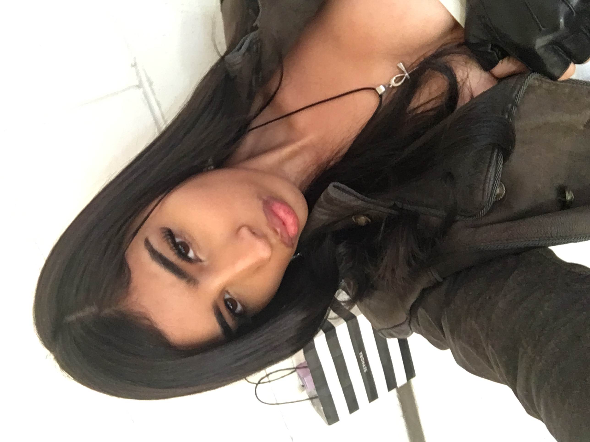

My name is Kiara Rodriguez, I am a sociology major but I am intrested in design,I always like to capture a moment through a lens. Taking photos of things that seem bland but tell a story, like the time I captured a stack of dead leaves during the fall, so simple, but it symbolizes the period of “change” and “rebirth.” Once spring comes along, new leaves will flourish and glow. To me, photography is a way to prove that the ordinary parts of our day are actually worth remembering. I don’t use anything too fancy, just an old school digital camera, and from time to time, capture the most important moments and objects through Polaroid film. Through various media, I want to emphasize that everything tells a story, and we can create stories out of simple things we see around us throughout our day to day lives.